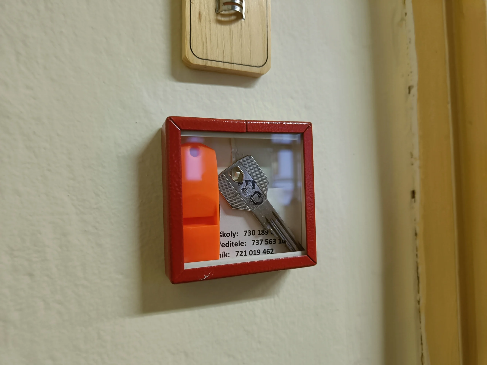
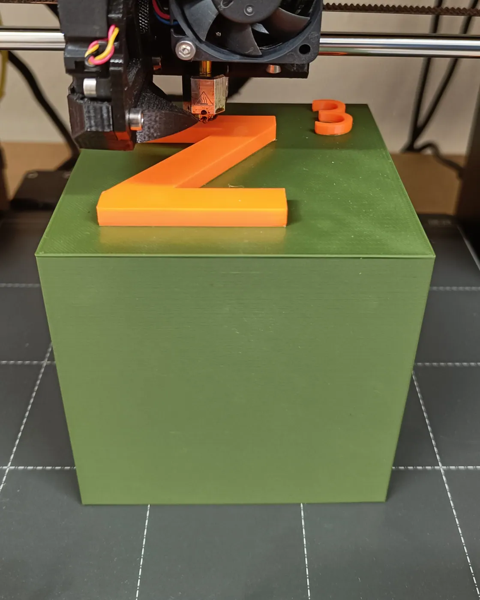
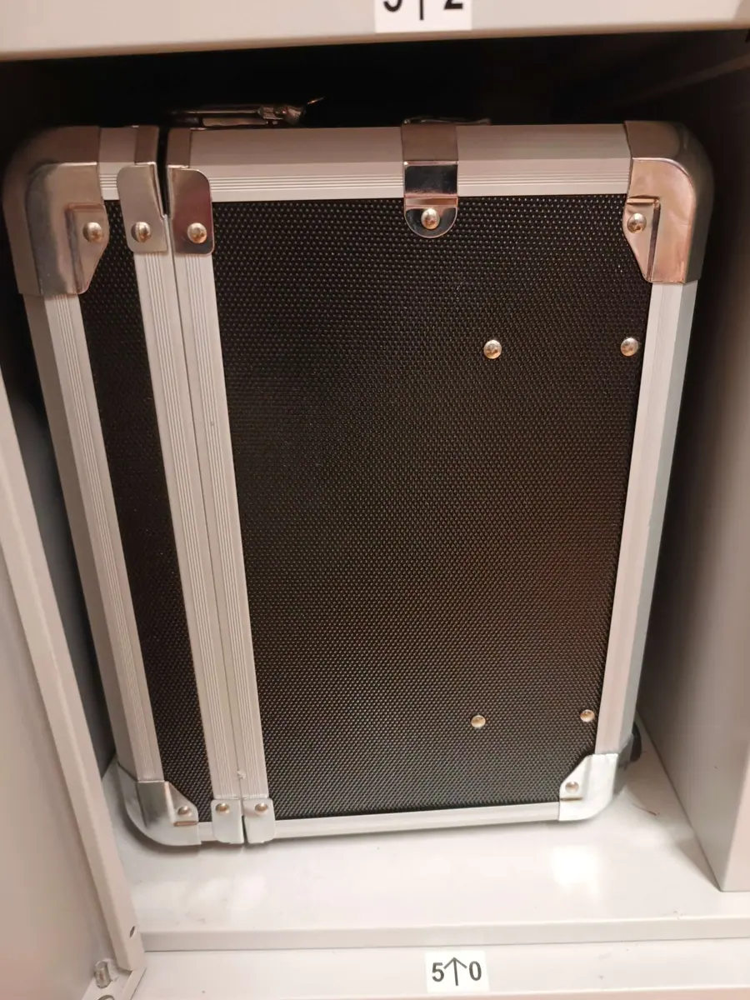
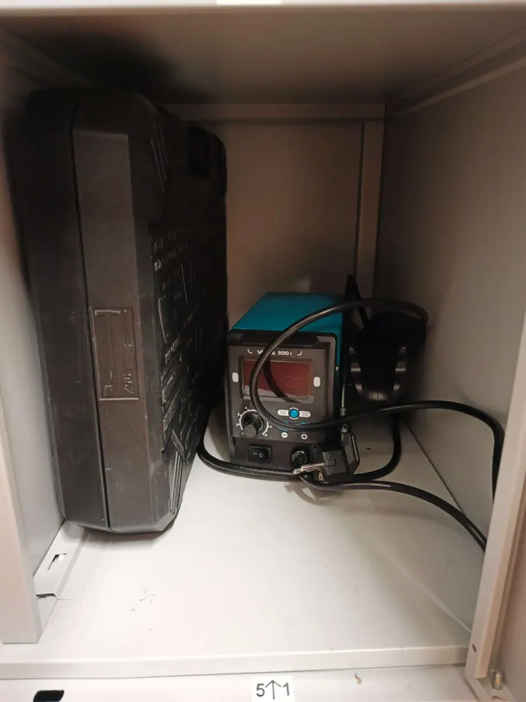
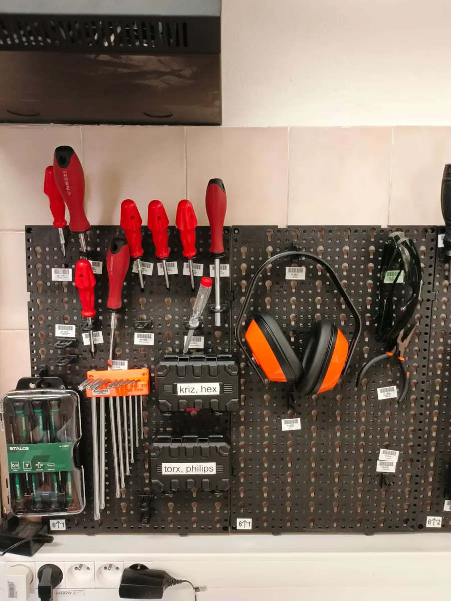

Naše práce
Jsme schopni vyrobit skoro vše. Budoucnost tvoříme rukama: realizujeme zakázky pro výuku, pro studenty i pro soutěže, od prvního návrhu až po hotový díl.
Gypri píšťalky pro bezpečnost
Navrhli a vyrobili jsme 3D tištěné píšťalky pro mimořádné události a evakuaci školy.
Jsou umístěny za bezpečnostním sklíčkem v každé třídě, aby byly rychle dostupné a zároveň chráněné. Píšťalky slouží pedagogům k přivolání pomoci a koordinaci evakuace při nečekaných situacích a jsou součástí školního krizového postupu.
Návrh, tisk a instalace proběhly kompletně v naší dílně, od prvního modelu až po umístění ve všech třídách.

Pomůcky pro výuku

Náš tým je schopen vytvořit jakoukoliv pomůcku do školy, kterou si jen dokážete představit.
Díky 3D tisku vyrábíme širokou škálu školních pomůcek na míru, od výukových modelů pro geometrii až po speciální komponenty pro projekty studentů. Zvládneme i technicky náročné zadání.
Vedle pomůcek vyrábíme také díly, které se běžně nedají sehnat. Mezi ně patří aretační díly na hlavové opěrky, držáky a kryty pro studentské projekty a prototypy, které postupně upravujeme až do hotové podoby.
Jak zakázka probíhá
Podle zadání vymodelujeme díl a doladíme rozměry tak, aby seděl na místo, kam patří.
Tisk na některé ze sedmi tiskáren Prusa. U větších dílů kombinujeme tisk s CNC obráběním a ručním dokončením.
Hotový díl předáme a máme radost, když se rovnou nasadí do provozu ve škole nebo v projektu.





Rádi vám pomůžeme
Neváhejte nás kontaktovat, pokud by se vám něco hodilo, třeba na nějaký projekt. Ozvat se můžete osobně v dílně nebo e-mailem.